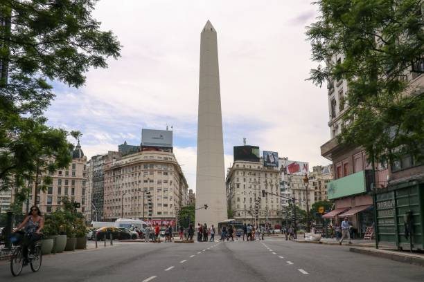

SOUTH AMERICA
The Fingers of Punta del Este (Los Dedos de Punta del Este)
/thumb.jpg)
La Mano is a sculpture in Punta del Este by Chilean artist Mario Irarrázabal. It depicts five human fingers partially emerging from sand and is located on Parada 1 at Brava Beach in Punta del Este, a popular tourist town in Uruguay. It is also known as either Los Dedos, or Hombre emergiendo a la vida.
Monumento às Bandeiras

Monument to the Bandeiras is a large-scale granite sculpture by the Italian-Brazilian sculptor Victor Brecheret at the entrance of Ibirapuera Park in São Paulo, Brazil. It was commissioned by the government of São Paulo in 1921 and completed in 1954.
Obelisco
The Obelisco de Buenos Aires is a national historic monument and icon of Buenos Aires. Located in the Plaza de la República in the intersection of avenues Corrientes and 9 de Julio, it was erected in 1936 to commemorate the quadricentennial of the first foundation of the city.